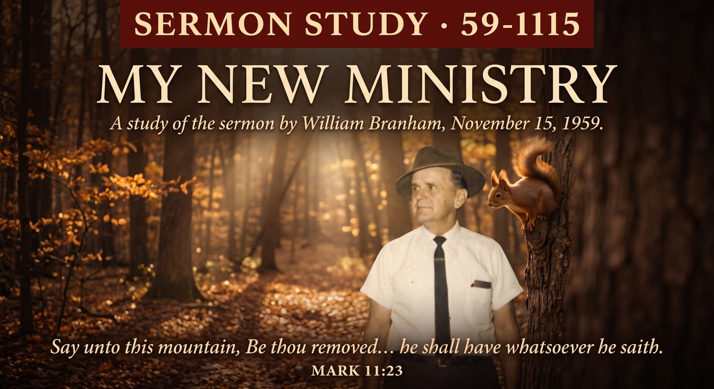

William Branham · November 15, 1959
♫ Listen to or read the full sermon at Voice Of God Recordings →

This is one of the quietest turning points in the Prophet's whole ministry, and that's exactly why it's easy to miss. No stadium, no healing line, no crowd at all. Just a man alone in the Indiana woods in October of 1959, a rifle he never had to fire, and a Word that had already been building in him for years finally showing itself in a new way.
Brother Branham was out hunting near Salem, Indiana, thinking on Mark 11:23 and 24, on Jesus' own words that whoever says to a mountain "be removed" and doesn't doubt in his heart shall have whatsoever he says. The Anointing came on him so strong he said he could hardly stand. Something told him to speak the squirrels into being, so he did, and where nothing had been standing a moment before, squirrels were there, exactly as many as he called for. It happened again a few weeks later. He wasn't performing for anyone. There was no one there to see it but him and God.
What makes this sermon what it is isn't the squirrels by themselves; it's what Brother Branham does with them once he's back down the hill. He ties it straight back to a vision God had shown him years earlier, of a little house, and a change coming to his ministry that he didn't yet have language for. Standing in those woods, he asks God outright: is this it? Is this the change You've been speaking of? A ministry that had moved from discerning sickness, to seeing visions of what was to come, was now stepping into something further still, the spoken word itself carrying creative power, the same power Jesus described and the Prophet had been quietly waiting on God to reveal in full.
Scripture doesn't leave room to treat the spoken word as a metaphor. God spoke, and there was light. Jesus spoke to a fig tree, and it withered from the root by the next morning, exactly as He'd said it would. Mark 11:23 isn't poetry, it's a mechanism, and Brother Branham simply took Jesus at His word in a Southern Indiana forest the way any believer is invited to. The squirrels weren't the point of the message. They were the evidence God chose to use, in private, before he ever said a word about it from a pulpit, that a man fully surrendered to the Word can speak and have it stand.
The temptation with a sermon like this is to treat it as a story about William Branham and stop there. That misses what he was actually pointing at. He wasn't asking anyone to go speak squirrels into a tree. He was showing, in the plainest possible terms, that the Word of God has not lost one ounce of its original creative power, and that the same Spirit who moved on him in those woods is not confined to 1959. The question this message actually leaves a believer with isn't "did this happen." It's whether we've let the Word get small in our own mouths, reduced to something we recite instead of something we actually believe, the way Jesus meant it and the way the Prophet was living it.
Source: My New Ministry, preached November 15, 1959. Text © Voice Of God Recordings. This study reflects my own understanding of the message as a believer, not a verbatim reproduction of the sermon.
← Back to Sermon Studies